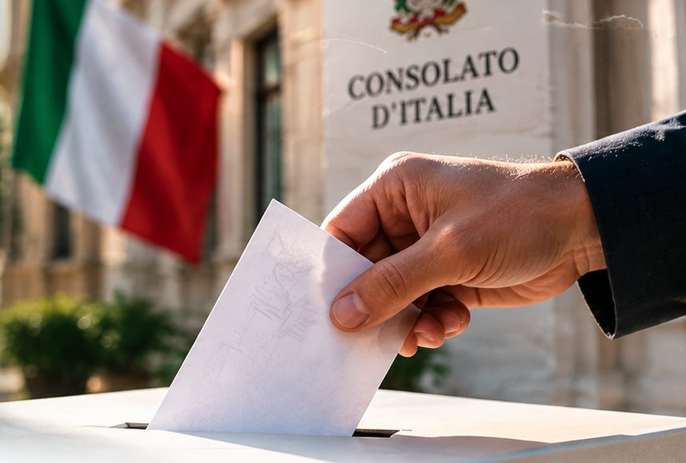

Partecipazione e rappresentanza
Promuovere una rappresentanza vicina, aperta e collegata alla comunità.

Nati all’estero + Nuove Generazioni · Lista n. 3
Scopri la nostra lista, le nostre proposte e le informazioni necessarie per partecipare al voto nella circoscrizione di Mar del Plata.
Rappresentanza
I Comitati degli Italiani all’Estero (COM.It.Es.) sono organismi elettivi di rappresentanza della comunità italiana residente all’estero. Si occupano di questioni legate alla collettività e ai suoi rapporti con le istituzioni italiane.
Consolato d’Italia a Mar del PlataLe persone che partecipano
RIZZO Monica Patricia
Località: Mar del Plata
Istituzione: Presidente Federazione delle Società Italiane di Mar del Plata e zona - As. Emilia Romagna di Mar del Plata
FANTINI Luciano Nahuel
Località: Mar del Plata
Istituzione: Tesoriere COMITES - As. Emilia Romagna di Mar del Plata / Centro Laziale Marplatense
MARINO Karina Mabel
Località: Tandil
Istituzione: Dante Alighieri di Tandil
MORI DELPONTE Thomas Christian
Località: Santa Clara
Istituzione: As. Emilia Romagna di Mar del Plata
ANTUNAU Hugo Daniel
Località: Necochea
Istituzione: CEIA di Necochea
VENTURELLI Micaela Belen
Località: Mar del Plata
Istituzione: Unione Regionale Siciliana Argentina (URSA)
LANI Romina
Località: Mar del Plata
Istituzione: Unione Marchigiana di Mar del Plata
BETTI Leonardo Daniel
Località: Mar del Plata
Istituzione: Sociedad Garibaldi di Mar del Plata
PICCOLINI MOSCUZZA Martín
Località: Mar del Plata
Istituzione: Avvocato. Radici a Siracusa (Sicilia)
LADDAGA Santiago Manuel
Località: Mar del Plata
Istituzione: Fondatore dell’Associazione Giovani Lucani nel Mondo. Regione Basilicata
TRANCHINI Leandro
Località: Necochea
Istituzione: CEIA di Necochea
DI MAURO Mariano Nestor
Località: Mar del Plata
Istituzione: Regione Sicilia
BERNARDI Silvana Irma
Località: Miramar
Istituzione: Promotrice della lingua italiana. Radici venete
SACCHI Alicia Raquel
Località: Mar del Plata
Istituzione: Famiglia Piemontese di Mar del Plata
FORASTIERO Patricio
Località: Mar del Plata
Istituzione: Regione Basilicata
CHIATTI Susana Luisa
Località: Mar del Plata
Istituzione: Presidente della Famiglia Umbra di Mar del Plata e Prosegretaria della Federazione delle Società Italiane di Mar del Plata e zona.
Una comunità italiana più unita, con le nuove generazioni
Assi da validare
Questi blocchi presentano aree di lavoro indicative. Non costituiscono impegni ufficiali fino all’approvazione di entrambe le organizzazioni.
Promuovere una rappresentanza vicina, aperta e collegata alla comunità.
Promuovere opportunità per lo sviluppo dei giovani e delle nuove generazioni.
Rafforzare la trasmissione culturale e il legame tra le generazioni.
Ascoltare le esigenze e fornire informazioni utili alla collettività.
Migliorare la comunicazione istituzionale e l’accesso a risorse affidabili.
Costruire iniziative e ponti di collaborazione duraturi.
Informazioni pratiche
Le elezioni dei COM.It.Es. si avvicinano e i plichi per votare stanno già arrivando. Segui questi passaggi:
Cerca sulla scheda la lista che vuoi votare.
Fai una croce (X) sul simbolo della lista.
Fai una croce (X) sui candidati della lista: puoi indicare fino a 4 persone.
Inserisci ogni cosa nella busta corretta, come indicato di seguito.
Dentro va la scheda elettorale.
Dentro vanno la busta bianca e il tagliando con i tuoi dati.
Spediscila per posta: deve arrivare entro il 4 dicembre 2026.
Risposte rapide
Sono organismi elettivi che rappresentano la comunità italiana residente all’estero.
Nella circoscrizione consolare di Mar del Plata potranno votare coloro che:
È richiesta un’anzianità di almeno sei mesi nella circoscrizione, prendendo come riferimento la data delle elezioni.
Punto fondamentale: essere iscritti all’AIRE non significa essere iscritti automaticamente all’elenco elettorale dei COM.It.Es. L’iscrizione andava richiesta espressamente entro il termine stabilito, ormai scaduto.
La richiesta è necessaria per partecipare tramite voto per corrispondenza, secondo la procedura ufficiale.
La busta con il voto deve arrivare entro il 4 dicembre 2026.
Rivolgiti direttamente al Consolato d’Italia a Mar del Plata con sufficiente anticipo.
Puoi esprimere fino a 4 preferenze della stessa lista.
La busta con il voto deve arrivare entro il 4 dicembre 2026, secondo le informazioni pubblicate.
Sul sito del Consolato d’Italia a Mar del Plata, collegato in questa pagina.